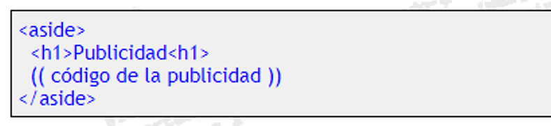

Etiqueta Aside
Esta es la última etiqueta que nos presenta HTML5 para bloques con cierto contenido semántico dentro de una página web. Con las etiquetas (aside) y (/aside), se nos invita a rodear todo aquel contenido que no es directamente contenido principal del que estamos hablando o del que estamos tratando en esa página en concreto. La norma dice que se use para todo aquel contenido tangencial al contenido principal de la página... ahí es ná! ja ja ja. Lo usaremos por tanto para todos aquellos elementos secundarios, como podrian ser los bloques publicitarios, enlaces externos, citas, un calendario de eventos, etc, siempre claro que no encontremos otra etiqueta más acorde de entre las ya comentadas.

Y con esta, terminamos de comentar estas nuevas etiquetas de HTML5 para representar zonas con cierto caracter o significado semántico. Existen otras nuevas etiquetas, pero ya son para resaltar textos, etc, no para agrupar bloques de elementos, etc. Recuerda aplicarlas cuando tengas claro que los elementos contenidos son realmente lo que el nombre de la etiqueta representa. Ante la duda, no las uses sin tener claro el porqué. Si no sabes si cierto bloque de código precisa o no de una de estas etiquetas, simplemente no le pongas ninguna. Si la necesitaras para poder aplicarle estilos o para ejecutarle cierto script, usa mejor las capas o Divs de toda la vida, que para eso son, oki? Espero que puedas terminar de entenderlo con algunos ejemplos prácticos y muestras reales. No olvides participar el el foro para terminar de aclarar estas nuevas ideas, oki?
Etiqueta footer
Si la etiqueta (header) era sencilla de entender, esta otra etiqueta (footer) lo es aún más. Se trata de una etiqueta para encerrar todo aquel código tipico de las partes inferiores de las páginas web. Contendrán por tanto enlaces a otras webs relacionadas, al mapa de la web, a una página de comentarios sobre el copyright, una política del portal, quizás algo de publicidad, etc. Lo típico, no? Footer significa pie y aunque está contruida para contener lo dicho, no ha de tener que estar en la parte más baja de una página web para poder ser un footer. Tened en cuenta que todas etiquetas intentan informar a los navegadores sobre lo que pueden contener esos bloques, no más. No olvidemos que el aspecto, apariencia e incluso la posición dentro de la web son cosas que les importan un webo a los navegadores. Esas cosas ya las leeran en la hoja de estilo. El Html5 pretende con estas etiquetas saber cuál es su contenido, información semántica, no más. Por tanto, puedes colocar luego esa "capa" donde te de la real gana dentro de la web.
Un footer o pie de página, puede contener tantos elementos como sea necesario. No ha de limitarse a contener lo dicho antes. Existen páginas con verdaderos super pies de página, con una ritra enorme de enlaces, con información acerca del registro en el portal correspondiente, con la títpica "letra pequeña" en la que se detallan condiciones de temas expuestos en el contenido principal, etc, etc, etc. Un footer puede ser realmente extenso, no temas. Puede por tanto contener incluso sections, articles, y algunas de las etiquetas que veremos a continuación. Cada página es un mundo y imagino que cada uno será capaz de diferencir cuáles de etiquetas puede aplicar. Veamos otras de estas nuevas etiquetas que nos propone Html5. Ya quedan menos.